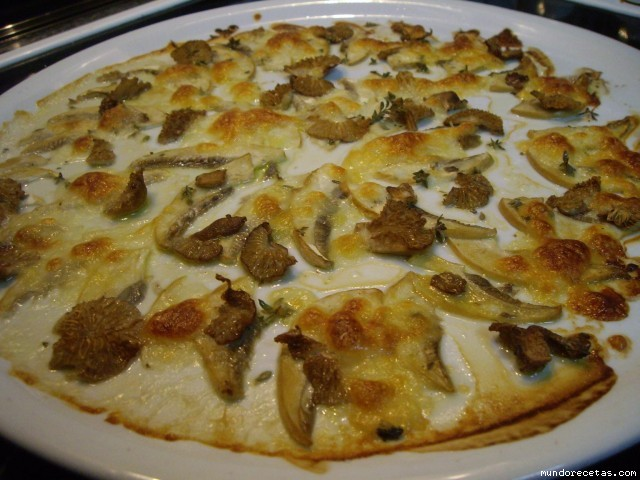

Setas gratinados

Ingredientes
- 24 setas gratinados
- 8 cucharadas soperas de aceite
- 2 cucharadas soperas de perejil picado
- 2 chalotas
- 1 vaso (de los vino) blanco
- sal
- 2 cucharados de pan rallado
Elaboración
- Corteles los pedúnculos o rabos a las setas
- Unte con aceite una fuente de horno y coloque en ella las setas
- Espolvoree cada seta con un poco de pan rallado
- Sírvalos en seguida y muy calientes